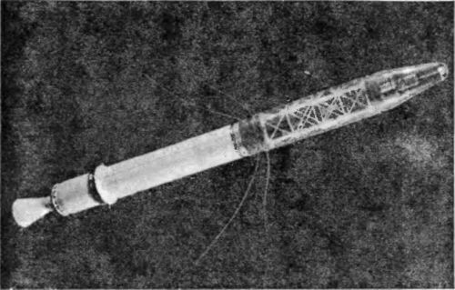
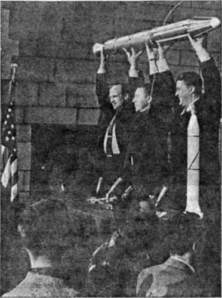

Спутник «Explorer-1»
Надо отдать должное президенту Эйзенхауэру, он довольно быстро справился с тем страхом и изумлением, которые испытали американцы, осознав свое отставание в самом амбициозном проекте столетия. Если же учесть, что президент как бывший военный мог оценить всю глубину этого отставания, элементарно сравнив 9 килограммов полезной нагрузки «Авангарда» с 84 килограммами «Спутника-1», то самообладание Эйзенхауэра можно ставить в пример всем другим политикам. Уже 9 октября (в день, когда «Правда» наконец опубликовала полную информацию о спутнике) он выступил на пресс-конференции в Белом доме с поздравлениями в адрес советских ученых. В своей речи президент вкратце рассказал о том, что делается по проекту «Авангард», и обещал, что первый американский спутник будет выведен на орбиту еще до истечения года.
11 октября в Белом доме разрабатывается документ, предлагающий самые энергичные шаги для ускорения всех ракетно-космических программ. 14 октября Эйзенхауэр проводит многочасовую беседу с министром обороны Нейлом Макэлроем; в ходе этой беседы обсуждались космические проекты, развитие которых позволило бы в кратчайшие сроки устранить отставание США в космической «гонке».
Тут следует сказать, что на следующий день после того, как стало известно о запуске советского спутника, Вернер фон Браун обратился к министру обороны с предложением о возрождении проекта «Орбитер» на новом технологическом уровне. При этом «ракетный барон» утверждал, что его спутник выйдет на орбиту уже через 60 дней!
Но тут, видимо, взыграла национальная гордость. Предложение фон Брауна снова отклонили, сосредоточив усилия на доведении до логического конца программы «Авангард». Тем более что представители флота бодро рапортовали о своей готовности в скором времени осуществить исторический старт.
И действительно 23 октября 1957 года (через 19 дней после «космического Перл-Харбора») состоялся пробный суборбитальный запуск прототипа системы «Авангард», которой было присвоено обозначение «TV-2» (сокращение от «Test Vehicle» — «Модель-лаборатория»). Во время этих испытаний отрабатывалась первая (стартовая) ступень ракеты-носителя, поэтому вместо второй и третьей ступени были установлены макеты. Запуск был признан успешным. Ракета «Авангард» сумела достигнуть высоты 175 километров и скорости 1,9 км/с.
Орбитальный запуск назначили на 2 декабря (через 29 дней после «космического Перл-Харбора»), но из-за технических неполадок он несколько раз откладывался. И вот наконец 6 декабря (через 33 дня после «космического Перл-Харбора») в присутствии более чем двухсот корреспондентов с космодрома мыса Канаверал стартовала ракета «Авангард-1» (вся система имела обозначение «TV-3»).
Гарри Ризнер от «Си-Би-Эс» вел с мыса эмоциональную радиопередачу.
«Это просто прекрасно! — вещал он аудитории, пораженный скоростью «Авангарда». — Все произошло так быстро, что я не увидел момент отлета».
Он и не мог ничего увидеть. «Авангард» никуда не улетел… Высота подъема не превысила метра, когда ракета завалилась на бок и с чудовищным грохотом взорвалась.

Весть о катастрофе (и новом поражении Америки) разнеслась по миру почти мгновенно. Карикатуристы изощрялись в изображении «Капутника», «Пфутника» и «Флопника» — каких только прозвищ не придумывали злосчастному «Авангарду». Намеки на диверсию «агентов Москвы», которые позволили себе высказать некоторые из высших офицеров ВМС, выглядели просто смешно. Сенатор Линдон Джонсон назвал программу «Авангард» «дешевой авантюрой, которая закончилась одной из наиболее разрекламированных и унизительных неудач в истории Соединенных Штатов».
Теперь уже было не до национальной гордости — глаза администрации с надеждой обратились к Редстоунскому арсеналу и «бывшему нацисту» Вернеру фон Брауну.
Еще 8 ноября, через пять дней после выхода на орбиту второго советского спутника с собакой Лайкой на борту (вес полезной нагрузки составил уже 508 килограммов!), министр обороны Макэлрой распорядился подготовить подробное техническое описание нового проекта запуска искусственного спутника с использованием ракет «Юпитер-Си».
Теперь схема запуска по Вернеру фон Брауну выглядела так. Вся ракета-носитель состояла из четырех ступеней, только первая из которых «Редстоун» была с жидкостным двигателем; вторая ступень состояла из связки 11 твердотопливных ракет «Сержант»; третья — из связки 3 ракет «Сержант»; четвертая — из одной ракеты «Сержант» с неотделяемым блоком полезной нагрузки, которая и должна была стать искусственным спутником Земли под названием «Эксплорер-1» («Ехр1огег-1»). Общий вес ракеты-носителя составлял 29 тонн, общая длина — 23 метра, диаметр — 1,8 метра, вес спутника — 13,97 килограмма.

Блок аппаратуры был установлен в носовом отсеке ракеты «Сержант» и весил всего 4,82 килограмма. В комплект научной аппаратуры спутника «Эксплорер-1» входил счетчик Гейгера-Мюллера для исследования космических лучей, особая сетка и микрофон для регистрации микрометеоритов и датчики температуры. Данные с приборов поступали непрерывно через четыре гибкие штыревые антенны, установленные симметрично. Питание осуществлялось ртутными батареями.
Замысел «ракетного барона» удался. 1 февраля 1958 года (через 119 дней после «космического Перл-Харбора») «Эксплорер-1» был выведен на орбиту, составлявшую в перигее 347 километров, а в апогее — 1859 километров.
В ходе полета спутника был проведен эксперимент, разработанный в Лаборатории реактивного движения под руководством доктора Джеймса Ван Аллена и подтвердивший гипотезу о существовании радиационных поясов вокруг Земли.
Спутник «Авангард-1» удалось запустить в космос только 17 марта 1958 года.